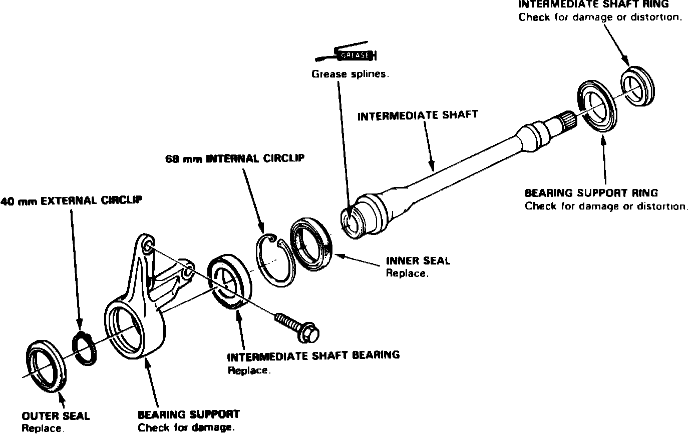
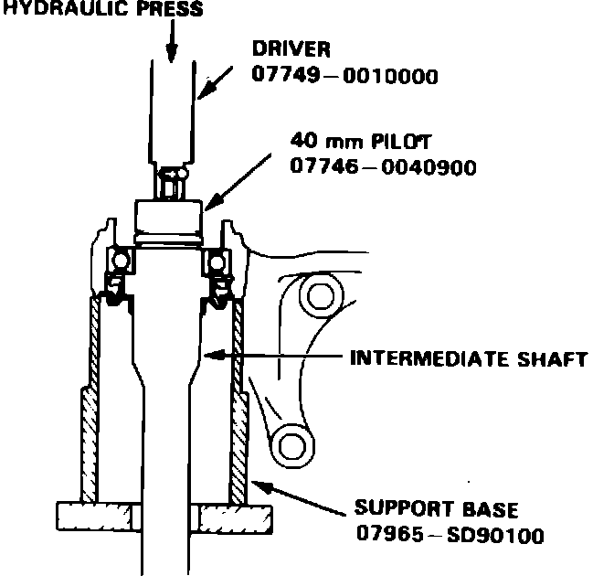
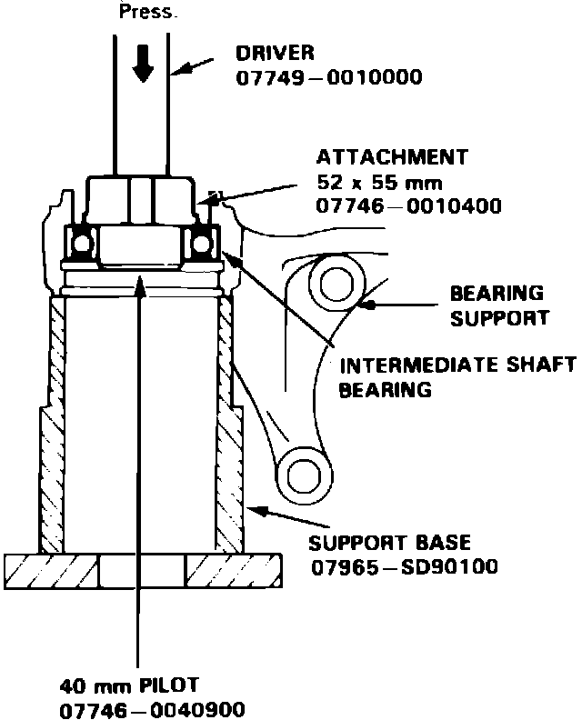
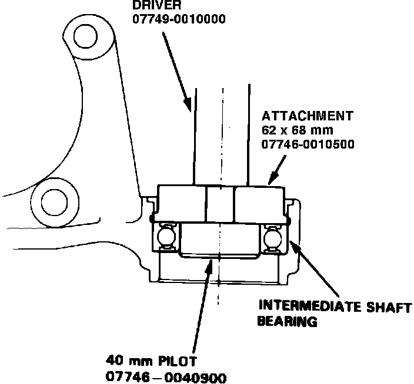
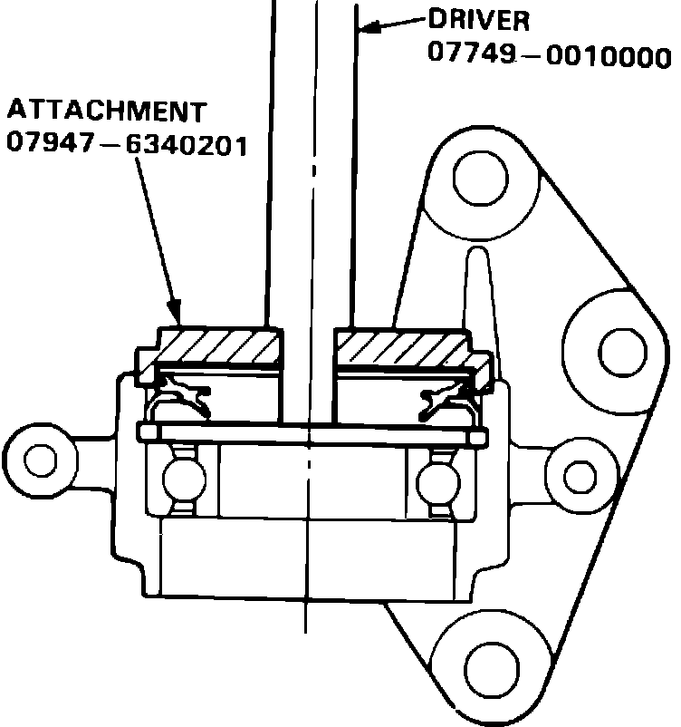
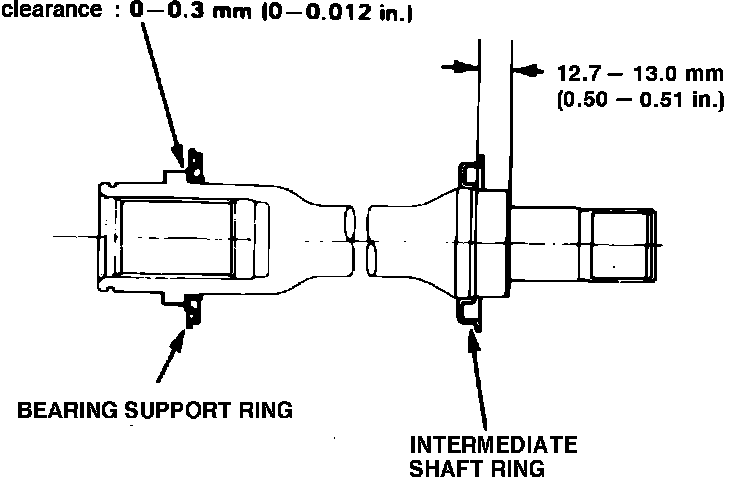
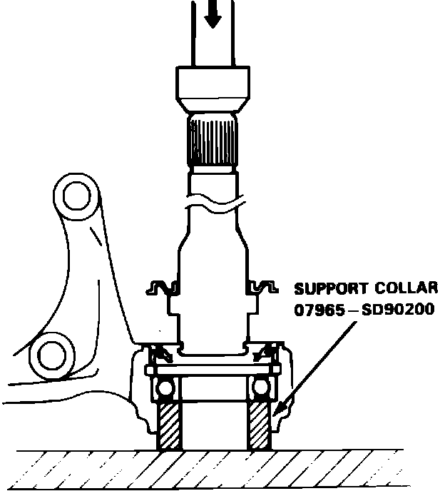
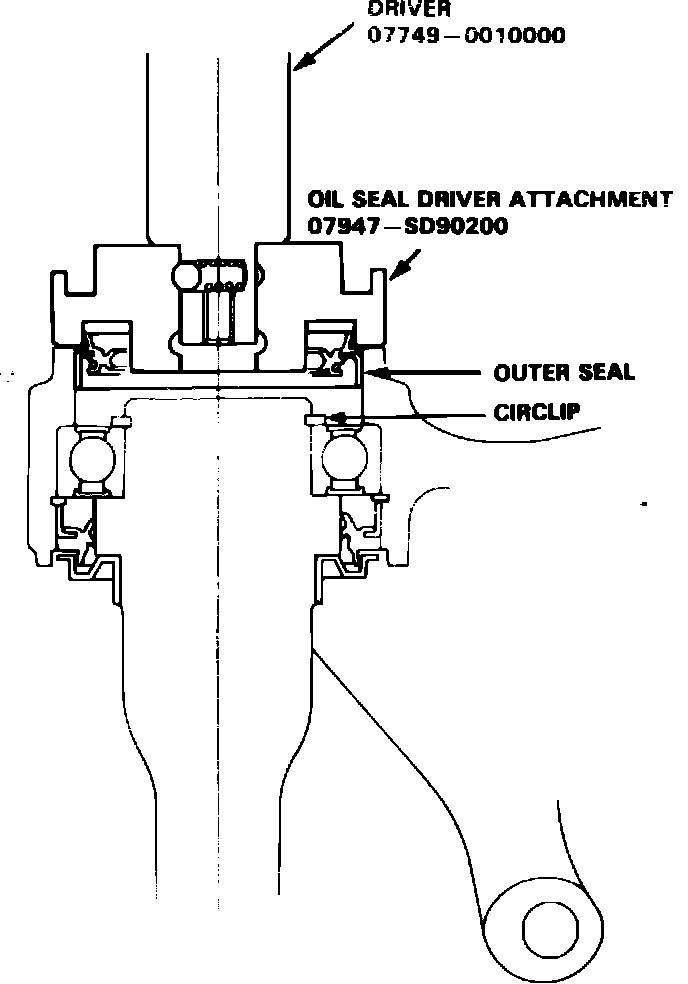

Intermediate Shaft
DISASSEMBLY
1. On Legend models, remove heat shield from bearing support.
Fig. 6 Exploded view of intermediate shaft assembly. Integra:

2. On all models, remove outer seal and circlip from bearing support, Fig. 6.
Fig. 8 Intermediate shaft removal:

3. Press intermediate shaft out of shaft bearing, Fig. 8.
Fig. 9 Intermediate shaft bearing removal:

4. Remove inner seal and circlip from shaft bearing.
5. Press shaft bearing out of bearing support, Fig. 9.
Fig. 10 Intermediate shaft bearing installation:

ASSEMBLY
1. Press shaft bearing into bearing support, Fig. 10.
2. Install inner circlip into bearing support groove. Ensure tapered end of circlip faces out.
Fig. 12 Intermediate shaft inner seal installation. Integra:

3. Press inner seal into bearing support, Fig. 12.
Fig. 13 Intermediate shaft ring & bearing support ring installation. Integra:

4. On Integra models, install shaft ring and bearing support ring on shaft to specified clearances, Fig. 13.
Fig. 14 Intermediate shaft installation:

5. On all models, press shaft into shaft bearing, Fig. 14.
6. Install outer circlip into shaft groove. Ensure tapered end of circlip faces out.
Fig. 15 Intermediate shaft outer seal installation:

7. Press outer seal into bearing support, Fig. 15.
8. In Legend models, install bearing support heat shield, torquing bolts to 7 ft. lbs.